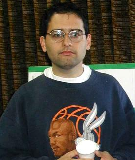

|  |
I was born on May 1977 in Israel. When I was about 1 year old, my
parents moved to the States for my Father's Post-Doctorate. I stayed
there until I was 5, and my sister Michal was born while we stayed in
Dallas, Texas.
My other sister, Noa, was born after we returned to Israel. Here, I went to kinder-garden, and to elementary school. Afterwards, I studied in Gimnasia Hertzelia in both junior high and high school, and I graduated from high school at the summer of 95'. I spent some time working as a programmer and computer developer for several computer-related companies. I gained a lot of knowledge and experience in the process, and met some very supportive people in the industry. In October 97' I began studying Electrical Engineering in the Technion. I am enjoying my studies as much as academic studies can be enjoyed. (and trust me, they can't be enjoyed very much). In any case, I feel that I deepend my understanding of computers and electronics because of them. I am particularily intersted in mathematics and computing. I've been programming since I was 10 years old, but it was not very serious until I started working as a programmer five years ago. As for math, it's been a favourite of mine since junior high. (I'm also interested in etymology and anicent history of the Near East and Europe, but in a rather unprofessional manner). Other hobbies of mine include a small amount of sports (I'm a little bit isolated at the Technion so I don't get to play much basketball as I like to), hiking, and solving puzzles and riddles of all sorts. I am very interested in the Linux and free software world. I initiated some of those open-source projects of my own. Namely, I ported a MOD player to Java, wrote a program that solves the Freecell card game and coded a useful patch for the GIMP. You can find more information about them on my homepage. Right now I'm involved in a Gamla which is a project to create a WWW application server and RAD (Rapid Application Development) tool for the Perl programming language. Aside from all that there is my literatural creations. I wrote a funny story which I called "The Enemy and how I helped to Fight it", which you can find on my web-site. It was originally written in Hebrew, but there is also an English translation. There's also "The One with the Fountainhead", which is an episode of Friends which parodies the book "The Fountainhead" by Ayn Rand. Naturally, it is written in English, and you can also find it on my site. I hope you enjoy my web-site! Shlomi Fish |